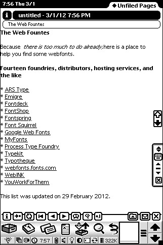
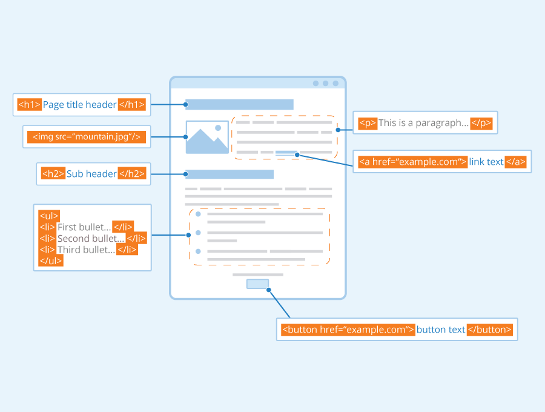

Listas
El elemento li del ingles item list o elemento de lista declara cada uno de los elementos de una lista. Sus etiquetas son: <li> y </li> (la de cierre es opcional Crea una caja: en bloque. Está definido como: Puede contener: cero o más elementos en bloque o en en linea. li - HTML: Lenguaje de etiquetas de hipertexto | MDN. (2022). Retrieved from https://developer.mozilla.org/es/docs/Web/HTML/Element/li#definici.c3.b3n
Enlaces
El Elemento HTML Anchor <a> crea un enlace a otras páginas de internet, archivos o ubicaciones dentro de la misma página, direcciones de correo, o cualquier otra URL. HTML: Lenguaje de etiquetas de hipertexto | MDN. (2022). Retrieved from https://developer.mozilla.org/es/docs/Web/HTML/Element/a
